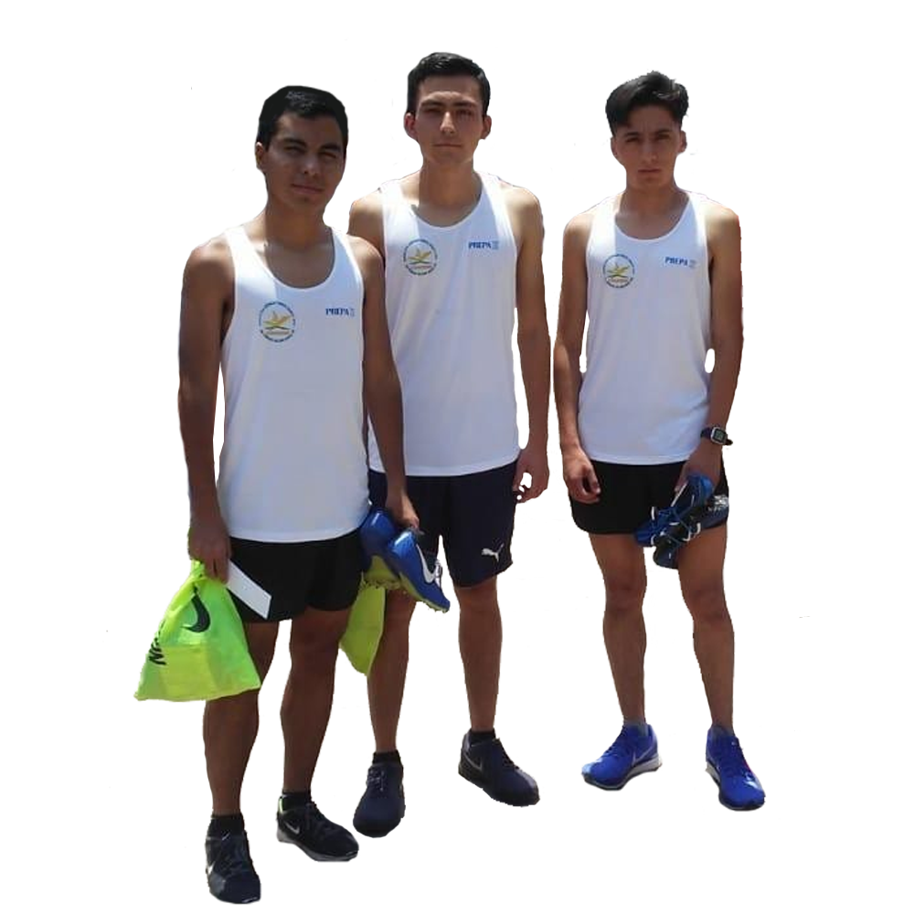
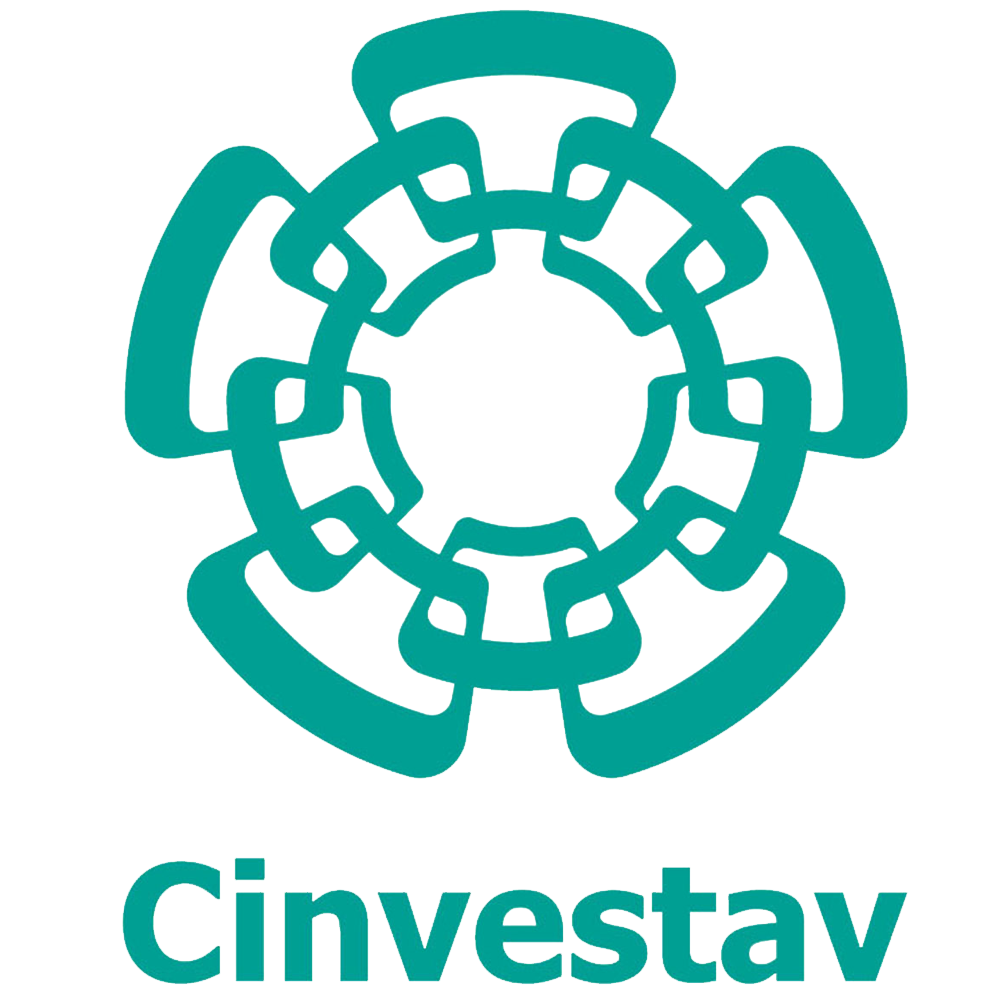
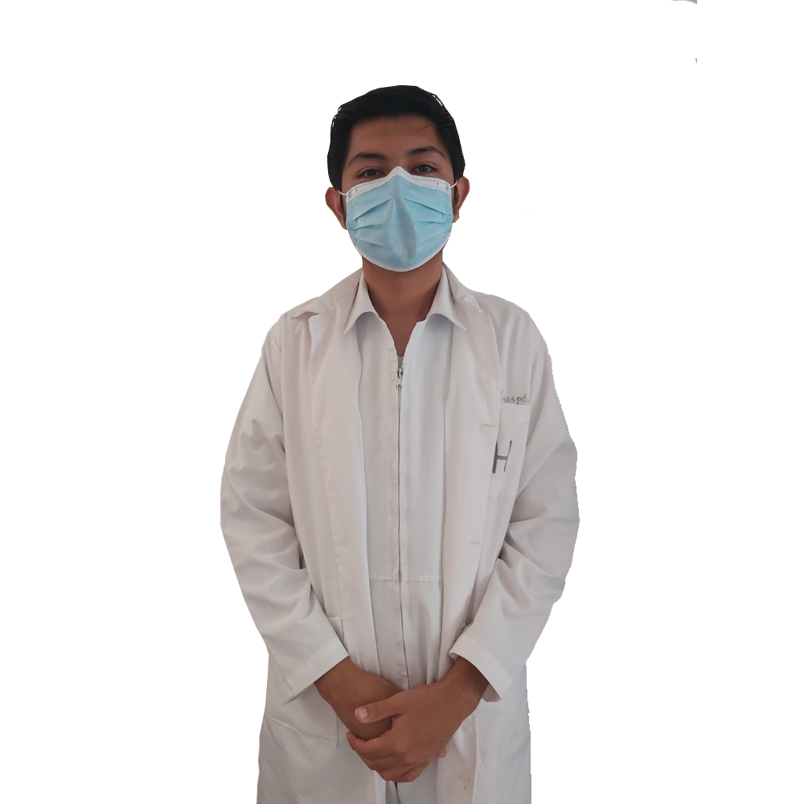
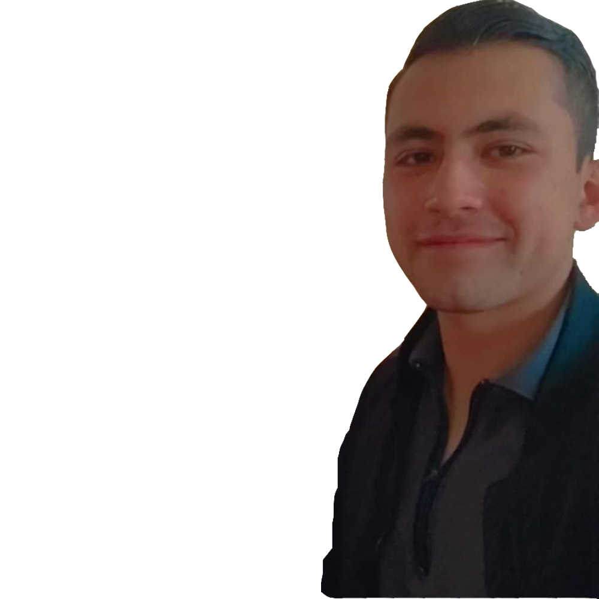

Un poco de mi...
Naci en el estado de Zacatecas, especificamente en el municipio de Zacatecas. Rodeado por mi familia materna donde mi educacion fue contribuida por mi madre Ana Jimenez, mi abuela Amelia Acosta, y mi tío Miguel Jimenez. Rodeado por familiares que se dedican a las ciencias humanas y sociales mi camino hacia las ciencias computacionales empezó desde la primaria Salvador Varela Resendiz donde mi gusto por las computadoras y videojuegos hizo su presencia pasando asi el mismo camino hacia la secundaria Salvador Vidal y la preparatoria UAZ Num 2 donde le pondria nombre a mi meta llamandole asi: Ingenieria en Sistemas Computacionales.

Acercado al deporte desde niño, el deporte que marcó mi vida fue Atletismo, donde me desarrollé en compañia del entrenador Anuar Alavarado y el entrenador Eduardo Cabrera, ambos entrenadores pertenecian a la Universidad Autononma de Zacatecas. Ambos entrenadores fueron parte para obtener mi motivacion hacia donde queria llegar y como deberia de esforzarme para llegar ahí,todo esto aprendiendolo durante los entrenamientos, competencias perdidas, competencias ganadas, entrenamientos mal terminados, pero siempre termianando las cosas y volteando hacia atras para ver en lo que fallé y corregirlo.Con la ayuda de ambos entrenadores un grupo de amigos igualmente ingenieros en sistemas Francisco Velasco y Andres Orozco logramos llegar a competir a las Nacionales de Interprepas.
En mi epoca de estudiante de secundaria mostré interes por la musica dando paso a unirme a la creacion de la banda banda Black Mind junto a mis compañeros de mi misma secundaria. Mas tarde mostraria interes por la musica electronica junto a la compañia del dj "Luigi DJ Boy" Luis Garcia lograria tocar en el Volumen Colours Fest y en el club noctruno Fahrenheit
Durante la preparatoria uno de mis objetivos era estudiar Ingenieria en sistemas computacionales, donde decidi estudiarla en el Instituto Politecnico Nacional. Mi interes sobre dicha carrera era lograr ser investigador sobre la rama de la computacion en el CINVESTAV(Centro de Investigacion y de Estudios Avanzados) o en el CIC (Centro de Investigacion en Computacion), esta idea su origen fue dado a que mi tío Miguel Jiménez habia estudiado su Doctorado en Genética y Biología Molecular para ser investigador en dicha area. 
Mi trabajo
Durante mi vida laboral me he dedicado a trabajar en diferentes proyectos para la industria tales como proyectos de investigacion con docentes del CINVESTAV y el CIC. Tambien he estado presente en proyectos en el area de diseño web y seguirad web donde dichas ramas fueron trabajadas con empresas dedicadas al mundo de la Web donde igualmente trabje en conjunto con otros programadores. Docente investigador del CINVESTAV, Profesor en el Instituto Politecnico Nacional y en la Universidad Autonoma de Zacatecas
Reseñas sobre mi trabajo.
Médico Cirujano Brandon Abel Roque Consóspo
En búsqueda de una mejor atención a pacientes con patologías relacionadas al corazón, se ideó un "codigo" que pudiese interpretar de manera segura, eficaz y precisa anormalidades expresadas por las ondas y segmentos del electrocardiograma, basado en múltiples criterios y parametros extraídos de guías de práctica clínica actualizadas. Con este "código" pretendemos brindar a los pacientes un primer acercamiento a su posible diagnóstico cuando el estudio electrocardiografico no puede ser interpretado de inmediato, esto es posible gracias a que el "codigo" reconoce y separa las distintas derivaciones que conforman este estudio, brindando información específica de cada segmento o intervalo, hasta información general como un posible diagnóstico diagnóstico diferencial, todo esto a través de una simple fotografía. Sin duda una relación extraordinaria entre la medicina y el desarrollo de software que ayuda a la atención de cardiopatoas de todo tipo. Otro gran paso para mejorar la atención de la salud y facilitar el trabajo de medicos y especialistas.
Arquiteca Alexia Villagrana Rojo
En el desarrollo de uno de mis proyectos arquitectónicos tipo casa-habitación, el ingeniero Félix demostró un excelente desempeño desarrollando un algoritmo para el cálculo de los diámetros de las tuberías utilizadas en las instalaciones de la obra. Escogerlo a el me resultó en una grata experiencia ya que realizó un excelente trabajo y demostró su eficiencia como programador.
Dr en Biomedicina Molecular Miguel Alejandro Jiménez Acosta
Me permito recomendar al ingeniero Axel Frederick Félix Jiménez a quien conocí durante el desarrollo de un proyecto de investigación titulado “Caracterización genética de pacientes mexicanos susceptibles a enfermedad grave por SARS-COV2”. Dicho proyecto se desarrolló en el departamento de Biomedicina Molecular del Centro de Investigación y Estudios Avanzados del Instituto Politécnico Nacional en el año 2020. En este proyecto se muestrearon a mas de 2000 pacientes contagiados por el virus SARS-COV2 durante el año 2020 en la Ciudad de México con el fin de secuenciar el genoma de los pacientes y detectar posibles genes involucrados en el desarrollo de una enfermedad grave tras el contacto con el virus. En este sentido el ingeniero Axel Félix puso a nuestra disposición un servidor web el cual nos permitió almacenar y organizar de forma fiable y eficaz los miles de datos obtenidos tras la secuenciación DNA de estos pacientes. Así mismo, Axel, propuso un método bioinformático que nos permitió identificar los 50 genes mayormente expresados en los pacientes que presentaban un cuadro grave de enfermedad pulmonar tras el contagio con el virus, en comparación con los pacientes que cursaban con un padecimiento leve o asintomático. Finalmente, el ingeniero Félix desarrolló un algoritmo que predice la probabilidad de padecer un cuadro grave de la enfermedad tras la exposición con el virus, mediante secuenciación del DNA a partir de una muestra sanguínea no invasiva en una persona aun antes de tener contacto con el virus. Estos resultados permiten a los médicos actuar de manera pronta y especifica frente a los numerosos contagios presentados durante la pandemia de COVID, así como identificar el tratamiento adecuado que los pacientes requieren con base en su susceptibilidad de desarrollar un cuadro grave de la enfermedad. De igual forma, los datos recabados durante este proyecto pueden ayudar al personal de salud a identificar aquellos grupos de riesgo en la población con base en sus características génicas y priorizar de esta forma la vacunación a estos sujetos con el fin de disminuir en lo posible el numero de pacientes internados y muertes que ha dejado esta pandemia. Cabe destacar que, durante este proyecto, el ingeniero Axel Frederick Félix Jiménez presentó en todo momento una actitud comprometida con el proyecto, realizando su trabajo siempre a tiempo y con una excelente calidad, por lo que no tengo ninguna duda en recomendarlo para los fines que juzgue convenientes. Agradeciendo de antemano su fina atención a la presente, me pongo a su disposición para aclarar cualquier duda.
Ingeniero en Sistemas Computacionales Jesus Francisco Velasco Rodriguez
Escribo esta reseña para informar sobre cómo fue el desempeño del Ingeniero Axel Félix cuando se presentó la oportunidad de trabajar con él en el área de desarrollo de sistemas, más precisamente desarrollando un algoritmo que nos permitiera optimizar el funcionamiento del área de contabilidad de una empresa. El ingeniero Axel Félix demostró contar con los conocimientos aptos para llevar sus tareas acabo sin problema alguno, hizo notar su responsabilidad, compromiso, honestidad en todo momento. Destacó su actitud de respeto hacia todos los compañeros que conformaron el equipo de trabajo, dejando en evidencia su gran capacidad para trabajar en equipo. Sin duda fue una grata experiencia trabajar con el Ingeniero Axel Félix.
Galeria:
{kind=link}
{kind=link}
{kind=link}
{kind=link}
{kind=link}
{kind=link}
{kind=link}
{kind=link}
{kind=link}
Contact
Para mas información consulta las siguientes redes: